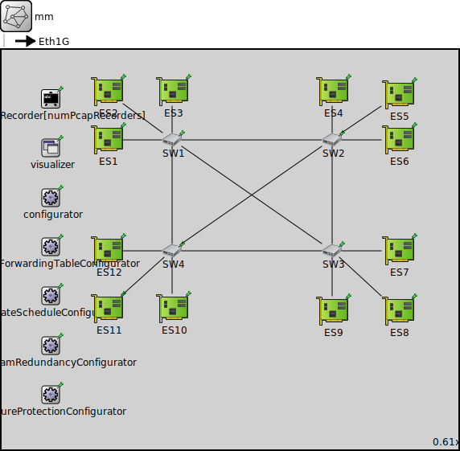

Package: combinedshapers.simulations.CBS_TAS.MM.TC3_1_tt20avb50_AB
mm
network(no description)
Usage diagram
The following diagram shows usage relationships between types. Unresolved types are missing from the diagram.
Inheritance diagram
The following diagram shows inheritance relationships for this type. Unresolved types are missing from the diagram.
Extends
| Name | Type | Description |
|---|---|---|
| TsnNetworkBase | network |
This module serves as a network base module for Time-Sensitive Networking (TSN). |
Parameters
| Name | Type | Default value | Description |
|---|---|---|---|
| recordPcap | bool | false | |
| numPcapRecorders | int | recordPcap ? 1 : 0 | |
| hasGlobalArp | bool | true |
Properties
| Name | Value | Description |
|---|---|---|
| isNetwork | ||
| class | NetworkBase | |
| display | bgb=927,811 |
Unassigned submodule parameters
| Name | Type | Default value | Description |
|---|---|---|---|
| pcapRecorder.verbose | bool | true |
whether to log packets on the module output |
| pcapRecorder.pcapFile | string | "" |
the PCAP file to be written |
| pcapRecorder.fileFormat | string | "pcapng" | |
| pcapRecorder.snaplen | int | 65535 |
maximum number of bytes to record per packet |
| pcapRecorder.dumpBadFrames | bool | true |
enable dump of frames with hasBitError |
| pcapRecorder.sendingSignalNames | string | "packetSentToLower" |
space-separated list of outbound packet signals to subscribe to |
| pcapRecorder.receivingSignalNames | string | "packetReceivedFromLower" |
space-separated list of inbound packet signals to subscribe to |
| pcapRecorder.dumpProtocols | string | "ethernetmac ppp ieee80211mac" |
space-separated list of protocol names as defined in the Protocol class |
| pcapRecorder.packetFilter | object | "*" |
which packets are considered, matches all packets by default |
| pcapRecorder.helpers | string | "" |
usable PcapRecorder::IHelper helpers for accept packettype and store/convert packet as specified linktype currently available: "inet::AckingMacToEthernetPcapRecorderHelper" |
| pcapRecorder.alwaysFlush | bool | false |
flush the pcapFile after each write to ensure that all packets are captured in case of a crash |
| pcapRecorder.displayStringTextFormat | string | "rec: %n pks" | |
| ES1.status.initialStatus | string | "UP" |
TODO @signal, @statistic |
| ES1.pcapRecorder.verbose | bool | true |
whether to log packets on the module output |
| ES1.pcapRecorder.pcapFile | string | "" |
the PCAP file to be written |
| ES1.pcapRecorder.fileFormat | string | "pcapng" | |
| ES1.pcapRecorder.snaplen | int | 65535 |
maximum number of bytes to record per packet |
| ES1.pcapRecorder.dumpBadFrames | bool | true |
enable dump of frames with hasBitError |
| ES1.pcapRecorder.moduleNamePatterns | string | "wlan[*] eth[*] ppp[*]" |
space-separated list of sibling module names to listen on |
| ES1.pcapRecorder.sendingSignalNames | string | "packetSentToLower" |
space-separated list of outbound packet signals to subscribe to |
| ES1.pcapRecorder.receivingSignalNames | string | "packetReceivedFromLower" |
space-separated list of inbound packet signals to subscribe to |
| ES1.pcapRecorder.dumpProtocols | string | "ethernetmac ppp ieee80211mac" |
space-separated list of protocol names as defined in the Protocol class |
| ES1.pcapRecorder.packetFilter | object | "*" |
which packets are considered, matches all packets by default |
| ES1.pcapRecorder.helpers | string | "" |
usable PcapRecorder::IHelper helpers for accept packettype and store/convert packet as specified linktype currently available: "inet::AckingMacToEthernetPcapRecorderHelper" |
| ES1.pcapRecorder.alwaysFlush | bool | false |
flush the pcapFile after each write to ensure that all packets are captured in case of a crash |
| ES1.pcapRecorder.displayStringTextFormat | string | "rec: %n pks" | |
| ES1.interfaceTable.displayAddresses | bool | false |
whether to display IP addresses on links |
| ES1.cb.displayStringTextFormat | string | "processed %p pk (%l)" |
determines the text that is written on top of the submodule |
| ES1.cb.forwardServiceRegistration | bool | true | |
| ES1.cb.forwardProtocolRegistration | bool | true | |
| ES1.bl.displayStringTextFormat | string | "processed %p pk (%l)" |
determines the text that is written on top of the submodule |
| ES1.bl.forwardServiceRegistration | bool | true | |
| ES1.bl.forwardProtocolRegistration | bool | true | |
| ES1.li.displayStringTextFormat | string | "processed %p pk (%l)" |
determines the text that is written on top of the submodule |
| ES1.li.forwardServiceRegistration | bool | true | |
| ES1.li.forwardProtocolRegistration | bool | true | |
| ES1.eth.bitrate | double | ||
| ES1.nl.displayStringTextFormat | string | "processed %p pk (%l)" |
determines the text that is written on top of the submodule |
| ES1.nl.forwardServiceRegistration | bool | true | |
| ES1.nl.forwardProtocolRegistration | bool | true | |
| ES1.tn.displayStringTextFormat | string | "processed %p pk (%l)" |
determines the text that is written on top of the submodule |
| ES1.tn.forwardServiceRegistration | bool | true | |
| ES1.tn.forwardProtocolRegistration | bool | true | |
| ES1.at.displayStringTextFormat | string | "processed %p pk (%l)" |
determines the text that is written on top of the submodule |
| ES1.at.forwardServiceRegistration | bool | true | |
| ES1.at.forwardProtocolRegistration | bool | true | |
| ES2.status.initialStatus | string | "UP" |
TODO @signal, @statistic |
| ES2.pcapRecorder.verbose | bool | true |
whether to log packets on the module output |
| ES2.pcapRecorder.pcapFile | string | "" |
the PCAP file to be written |
| ES2.pcapRecorder.fileFormat | string | "pcapng" | |
| ES2.pcapRecorder.snaplen | int | 65535 |
maximum number of bytes to record per packet |
| ES2.pcapRecorder.dumpBadFrames | bool | true |
enable dump of frames with hasBitError |
| ES2.pcapRecorder.moduleNamePatterns | string | "wlan[*] eth[*] ppp[*]" |
space-separated list of sibling module names to listen on |
| ES2.pcapRecorder.sendingSignalNames | string | "packetSentToLower" |
space-separated list of outbound packet signals to subscribe to |
| ES2.pcapRecorder.receivingSignalNames | string | "packetReceivedFromLower" |
space-separated list of inbound packet signals to subscribe to |
| ES2.pcapRecorder.dumpProtocols | string | "ethernetmac ppp ieee80211mac" |
space-separated list of protocol names as defined in the Protocol class |
| ES2.pcapRecorder.packetFilter | object | "*" |
which packets are considered, matches all packets by default |
| ES2.pcapRecorder.helpers | string | "" |
usable PcapRecorder::IHelper helpers for accept packettype and store/convert packet as specified linktype currently available: "inet::AckingMacToEthernetPcapRecorderHelper" |
| ES2.pcapRecorder.alwaysFlush | bool | false |
flush the pcapFile after each write to ensure that all packets are captured in case of a crash |
| ES2.pcapRecorder.displayStringTextFormat | string | "rec: %n pks" | |
| ES2.interfaceTable.displayAddresses | bool | false |
whether to display IP addresses on links |
| ES2.cb.displayStringTextFormat | string | "processed %p pk (%l)" |
determines the text that is written on top of the submodule |
| ES2.cb.forwardServiceRegistration | bool | true | |
| ES2.cb.forwardProtocolRegistration | bool | true | |
| ES2.bl.displayStringTextFormat | string | "processed %p pk (%l)" |
determines the text that is written on top of the submodule |
| ES2.bl.forwardServiceRegistration | bool | true | |
| ES2.bl.forwardProtocolRegistration | bool | true | |
| ES2.li.displayStringTextFormat | string | "processed %p pk (%l)" |
determines the text that is written on top of the submodule |
| ES2.li.forwardServiceRegistration | bool | true | |
| ES2.li.forwardProtocolRegistration | bool | true | |
| ES2.eth.bitrate | double | ||
| ES2.nl.displayStringTextFormat | string | "processed %p pk (%l)" |
determines the text that is written on top of the submodule |
| ES2.nl.forwardServiceRegistration | bool | true | |
| ES2.nl.forwardProtocolRegistration | bool | true | |
| ES2.tn.displayStringTextFormat | string | "processed %p pk (%l)" |
determines the text that is written on top of the submodule |
| ES2.tn.forwardServiceRegistration | bool | true | |
| ES2.tn.forwardProtocolRegistration | bool | true | |
| ES2.at.displayStringTextFormat | string | "processed %p pk (%l)" |
determines the text that is written on top of the submodule |
| ES2.at.forwardServiceRegistration | bool | true | |
| ES2.at.forwardProtocolRegistration | bool | true | |
| ES3.status.initialStatus | string | "UP" |
TODO @signal, @statistic |
| ES3.pcapRecorder.verbose | bool | true |
whether to log packets on the module output |
| ES3.pcapRecorder.pcapFile | string | "" |
the PCAP file to be written |
| ES3.pcapRecorder.fileFormat | string | "pcapng" | |
| ES3.pcapRecorder.snaplen | int | 65535 |
maximum number of bytes to record per packet |
| ES3.pcapRecorder.dumpBadFrames | bool | true |
enable dump of frames with hasBitError |
| ES3.pcapRecorder.moduleNamePatterns | string | "wlan[*] eth[*] ppp[*]" |
space-separated list of sibling module names to listen on |
| ES3.pcapRecorder.sendingSignalNames | string | "packetSentToLower" |
space-separated list of outbound packet signals to subscribe to |
| ES3.pcapRecorder.receivingSignalNames | string | "packetReceivedFromLower" |
space-separated list of inbound packet signals to subscribe to |
| ES3.pcapRecorder.dumpProtocols | string | "ethernetmac ppp ieee80211mac" |
space-separated list of protocol names as defined in the Protocol class |
| ES3.pcapRecorder.packetFilter | object | "*" |
which packets are considered, matches all packets by default |
| ES3.pcapRecorder.helpers | string | "" |
usable PcapRecorder::IHelper helpers for accept packettype and store/convert packet as specified linktype currently available: "inet::AckingMacToEthernetPcapRecorderHelper" |
| ES3.pcapRecorder.alwaysFlush | bool | false |
flush the pcapFile after each write to ensure that all packets are captured in case of a crash |
| ES3.pcapRecorder.displayStringTextFormat | string | "rec: %n pks" | |
| ES3.interfaceTable.displayAddresses | bool | false |
whether to display IP addresses on links |
| ES3.cb.displayStringTextFormat | string | "processed %p pk (%l)" |
determines the text that is written on top of the submodule |
| ES3.cb.forwardServiceRegistration | bool | true | |
| ES3.cb.forwardProtocolRegistration | bool | true | |
| ES3.bl.displayStringTextFormat | string | "processed %p pk (%l)" |
determines the text that is written on top of the submodule |
| ES3.bl.forwardServiceRegistration | bool | true | |
| ES3.bl.forwardProtocolRegistration | bool | true | |
| ES3.li.displayStringTextFormat | string | "processed %p pk (%l)" |
determines the text that is written on top of the submodule |
| ES3.li.forwardServiceRegistration | bool | true | |
| ES3.li.forwardProtocolRegistration | bool | true | |
| ES3.eth.bitrate | double | ||
| ES3.nl.displayStringTextFormat | string | "processed %p pk (%l)" |
determines the text that is written on top of the submodule |
| ES3.nl.forwardServiceRegistration | bool | true | |
| ES3.nl.forwardProtocolRegistration | bool | true | |
| ES3.tn.displayStringTextFormat | string | "processed %p pk (%l)" |
determines the text that is written on top of the submodule |
| ES3.tn.forwardServiceRegistration | bool | true | |
| ES3.tn.forwardProtocolRegistration | bool | true | |
| ES3.at.displayStringTextFormat | string | "processed %p pk (%l)" |
determines the text that is written on top of the submodule |
| ES3.at.forwardServiceRegistration | bool | true | |
| ES3.at.forwardProtocolRegistration | bool | true | |
| ES4.status.initialStatus | string | "UP" |
TODO @signal, @statistic |
| ES4.pcapRecorder.verbose | bool | true |
whether to log packets on the module output |
| ES4.pcapRecorder.pcapFile | string | "" |
the PCAP file to be written |
| ES4.pcapRecorder.fileFormat | string | "pcapng" | |
| ES4.pcapRecorder.snaplen | int | 65535 |
maximum number of bytes to record per packet |
| ES4.pcapRecorder.dumpBadFrames | bool | true |
enable dump of frames with hasBitError |
| ES4.pcapRecorder.moduleNamePatterns | string | "wlan[*] eth[*] ppp[*]" |
space-separated list of sibling module names to listen on |
| ES4.pcapRecorder.sendingSignalNames | string | "packetSentToLower" |
space-separated list of outbound packet signals to subscribe to |
| ES4.pcapRecorder.receivingSignalNames | string | "packetReceivedFromLower" |
space-separated list of inbound packet signals to subscribe to |
| ES4.pcapRecorder.dumpProtocols | string | "ethernetmac ppp ieee80211mac" |
space-separated list of protocol names as defined in the Protocol class |
| ES4.pcapRecorder.packetFilter | object | "*" |
which packets are considered, matches all packets by default |
| ES4.pcapRecorder.helpers | string | "" |
usable PcapRecorder::IHelper helpers for accept packettype and store/convert packet as specified linktype currently available: "inet::AckingMacToEthernetPcapRecorderHelper" |
| ES4.pcapRecorder.alwaysFlush | bool | false |
flush the pcapFile after each write to ensure that all packets are captured in case of a crash |
| ES4.pcapRecorder.displayStringTextFormat | string | "rec: %n pks" | |
| ES4.interfaceTable.displayAddresses | bool | false |
whether to display IP addresses on links |
| ES4.cb.displayStringTextFormat | string | "processed %p pk (%l)" |
determines the text that is written on top of the submodule |
| ES4.cb.forwardServiceRegistration | bool | true | |
| ES4.cb.forwardProtocolRegistration | bool | true | |
| ES4.bl.displayStringTextFormat | string | "processed %p pk (%l)" |
determines the text that is written on top of the submodule |
| ES4.bl.forwardServiceRegistration | bool | true | |
| ES4.bl.forwardProtocolRegistration | bool | true | |
| ES4.li.displayStringTextFormat | string | "processed %p pk (%l)" |
determines the text that is written on top of the submodule |
| ES4.li.forwardServiceRegistration | bool | true | |
| ES4.li.forwardProtocolRegistration | bool | true | |
| ES4.eth.bitrate | double | ||
| ES4.nl.displayStringTextFormat | string | "processed %p pk (%l)" |
determines the text that is written on top of the submodule |
| ES4.nl.forwardServiceRegistration | bool | true | |
| ES4.nl.forwardProtocolRegistration | bool | true | |
| ES4.tn.displayStringTextFormat | string | "processed %p pk (%l)" |
determines the text that is written on top of the submodule |
| ES4.tn.forwardServiceRegistration | bool | true | |
| ES4.tn.forwardProtocolRegistration | bool | true | |
| ES4.at.displayStringTextFormat | string | "processed %p pk (%l)" |
determines the text that is written on top of the submodule |
| ES4.at.forwardServiceRegistration | bool | true | |
| ES4.at.forwardProtocolRegistration | bool | true | |
| ES5.status.initialStatus | string | "UP" |
TODO @signal, @statistic |
| ES5.pcapRecorder.verbose | bool | true |
whether to log packets on the module output |
| ES5.pcapRecorder.pcapFile | string | "" |
the PCAP file to be written |
| ES5.pcapRecorder.fileFormat | string | "pcapng" | |
| ES5.pcapRecorder.snaplen | int | 65535 |
maximum number of bytes to record per packet |
| ES5.pcapRecorder.dumpBadFrames | bool | true |
enable dump of frames with hasBitError |
| ES5.pcapRecorder.moduleNamePatterns | string | "wlan[*] eth[*] ppp[*]" |
space-separated list of sibling module names to listen on |
| ES5.pcapRecorder.sendingSignalNames | string | "packetSentToLower" |
space-separated list of outbound packet signals to subscribe to |
| ES5.pcapRecorder.receivingSignalNames | string | "packetReceivedFromLower" |
space-separated list of inbound packet signals to subscribe to |
| ES5.pcapRecorder.dumpProtocols | string | "ethernetmac ppp ieee80211mac" |
space-separated list of protocol names as defined in the Protocol class |
| ES5.pcapRecorder.packetFilter | object | "*" |
which packets are considered, matches all packets by default |
| ES5.pcapRecorder.helpers | string | "" |
usable PcapRecorder::IHelper helpers for accept packettype and store/convert packet as specified linktype currently available: "inet::AckingMacToEthernetPcapRecorderHelper" |
| ES5.pcapRecorder.alwaysFlush | bool | false |
flush the pcapFile after each write to ensure that all packets are captured in case of a crash |
| ES5.pcapRecorder.displayStringTextFormat | string | "rec: %n pks" | |
| ES5.interfaceTable.displayAddresses | bool | false |
whether to display IP addresses on links |
| ES5.cb.displayStringTextFormat | string | "processed %p pk (%l)" |
determines the text that is written on top of the submodule |
| ES5.cb.forwardServiceRegistration | bool | true | |
| ES5.cb.forwardProtocolRegistration | bool | true | |
| ES5.bl.displayStringTextFormat | string | "processed %p pk (%l)" |
determines the text that is written on top of the submodule |
| ES5.bl.forwardServiceRegistration | bool | true | |
| ES5.bl.forwardProtocolRegistration | bool | true | |
| ES5.li.displayStringTextFormat | string | "processed %p pk (%l)" |
determines the text that is written on top of the submodule |
| ES5.li.forwardServiceRegistration | bool | true | |
| ES5.li.forwardProtocolRegistration | bool | true | |
| ES5.eth.bitrate | double | ||
| ES5.nl.displayStringTextFormat | string | "processed %p pk (%l)" |
determines the text that is written on top of the submodule |
| ES5.nl.forwardServiceRegistration | bool | true | |
| ES5.nl.forwardProtocolRegistration | bool | true | |
| ES5.tn.displayStringTextFormat | string | "processed %p pk (%l)" |
determines the text that is written on top of the submodule |
| ES5.tn.forwardServiceRegistration | bool | true | |
| ES5.tn.forwardProtocolRegistration | bool | true | |
| ES5.at.displayStringTextFormat | string | "processed %p pk (%l)" |
determines the text that is written on top of the submodule |
| ES5.at.forwardServiceRegistration | bool | true | |
| ES5.at.forwardProtocolRegistration | bool | true | |
| ES6.status.initialStatus | string | "UP" |
TODO @signal, @statistic |
| ES6.pcapRecorder.verbose | bool | true |
whether to log packets on the module output |
| ES6.pcapRecorder.pcapFile | string | "" |
the PCAP file to be written |
| ES6.pcapRecorder.fileFormat | string | "pcapng" | |
| ES6.pcapRecorder.snaplen | int | 65535 |
maximum number of bytes to record per packet |
| ES6.pcapRecorder.dumpBadFrames | bool | true |
enable dump of frames with hasBitError |
| ES6.pcapRecorder.moduleNamePatterns | string | "wlan[*] eth[*] ppp[*]" |
space-separated list of sibling module names to listen on |
| ES6.pcapRecorder.sendingSignalNames | string | "packetSentToLower" |
space-separated list of outbound packet signals to subscribe to |
| ES6.pcapRecorder.receivingSignalNames | string | "packetReceivedFromLower" |
space-separated list of inbound packet signals to subscribe to |
| ES6.pcapRecorder.dumpProtocols | string | "ethernetmac ppp ieee80211mac" |
space-separated list of protocol names as defined in the Protocol class |
| ES6.pcapRecorder.packetFilter | object | "*" |
which packets are considered, matches all packets by default |
| ES6.pcapRecorder.helpers | string | "" |
usable PcapRecorder::IHelper helpers for accept packettype and store/convert packet as specified linktype currently available: "inet::AckingMacToEthernetPcapRecorderHelper" |
| ES6.pcapRecorder.alwaysFlush | bool | false |
flush the pcapFile after each write to ensure that all packets are captured in case of a crash |
| ES6.pcapRecorder.displayStringTextFormat | string | "rec: %n pks" | |
| ES6.interfaceTable.displayAddresses | bool | false |
whether to display IP addresses on links |
| ES6.cb.displayStringTextFormat | string | "processed %p pk (%l)" |
determines the text that is written on top of the submodule |
| ES6.cb.forwardServiceRegistration | bool | true | |
| ES6.cb.forwardProtocolRegistration | bool | true | |
| ES6.bl.displayStringTextFormat | string | "processed %p pk (%l)" |
determines the text that is written on top of the submodule |
| ES6.bl.forwardServiceRegistration | bool | true | |
| ES6.bl.forwardProtocolRegistration | bool | true | |
| ES6.li.displayStringTextFormat | string | "processed %p pk (%l)" |
determines the text that is written on top of the submodule |
| ES6.li.forwardServiceRegistration | bool | true | |
| ES6.li.forwardProtocolRegistration | bool | true | |
| ES6.eth.bitrate | double | ||
| ES6.nl.displayStringTextFormat | string | "processed %p pk (%l)" |
determines the text that is written on top of the submodule |
| ES6.nl.forwardServiceRegistration | bool | true | |
| ES6.nl.forwardProtocolRegistration | bool | true | |
| ES6.tn.displayStringTextFormat | string | "processed %p pk (%l)" |
determines the text that is written on top of the submodule |
| ES6.tn.forwardServiceRegistration | bool | true | |
| ES6.tn.forwardProtocolRegistration | bool | true | |
| ES6.at.displayStringTextFormat | string | "processed %p pk (%l)" |
determines the text that is written on top of the submodule |
| ES6.at.forwardServiceRegistration | bool | true | |
| ES6.at.forwardProtocolRegistration | bool | true | |
| ES7.status.initialStatus | string | "UP" |
TODO @signal, @statistic |
| ES7.pcapRecorder.verbose | bool | true |
whether to log packets on the module output |
| ES7.pcapRecorder.pcapFile | string | "" |
the PCAP file to be written |
| ES7.pcapRecorder.fileFormat | string | "pcapng" | |
| ES7.pcapRecorder.snaplen | int | 65535 |
maximum number of bytes to record per packet |
| ES7.pcapRecorder.dumpBadFrames | bool | true |
enable dump of frames with hasBitError |
| ES7.pcapRecorder.moduleNamePatterns | string | "wlan[*] eth[*] ppp[*]" |
space-separated list of sibling module names to listen on |
| ES7.pcapRecorder.sendingSignalNames | string | "packetSentToLower" |
space-separated list of outbound packet signals to subscribe to |
| ES7.pcapRecorder.receivingSignalNames | string | "packetReceivedFromLower" |
space-separated list of inbound packet signals to subscribe to |
| ES7.pcapRecorder.dumpProtocols | string | "ethernetmac ppp ieee80211mac" |
space-separated list of protocol names as defined in the Protocol class |
| ES7.pcapRecorder.packetFilter | object | "*" |
which packets are considered, matches all packets by default |
| ES7.pcapRecorder.helpers | string | "" |
usable PcapRecorder::IHelper helpers for accept packettype and store/convert packet as specified linktype currently available: "inet::AckingMacToEthernetPcapRecorderHelper" |
| ES7.pcapRecorder.alwaysFlush | bool | false |
flush the pcapFile after each write to ensure that all packets are captured in case of a crash |
| ES7.pcapRecorder.displayStringTextFormat | string | "rec: %n pks" | |
| ES7.interfaceTable.displayAddresses | bool | false |
whether to display IP addresses on links |
| ES7.cb.displayStringTextFormat | string | "processed %p pk (%l)" |
determines the text that is written on top of the submodule |
| ES7.cb.forwardServiceRegistration | bool | true | |
| ES7.cb.forwardProtocolRegistration | bool | true | |
| ES7.bl.displayStringTextFormat | string | "processed %p pk (%l)" |
determines the text that is written on top of the submodule |
| ES7.bl.forwardServiceRegistration | bool | true | |
| ES7.bl.forwardProtocolRegistration | bool | true | |
| ES7.li.displayStringTextFormat | string | "processed %p pk (%l)" |
determines the text that is written on top of the submodule |
| ES7.li.forwardServiceRegistration | bool | true | |
| ES7.li.forwardProtocolRegistration | bool | true | |
| ES7.eth.bitrate | double | ||
| ES7.nl.displayStringTextFormat | string | "processed %p pk (%l)" |
determines the text that is written on top of the submodule |
| ES7.nl.forwardServiceRegistration | bool | true | |
| ES7.nl.forwardProtocolRegistration | bool | true | |
| ES7.tn.displayStringTextFormat | string | "processed %p pk (%l)" |
determines the text that is written on top of the submodule |
| ES7.tn.forwardServiceRegistration | bool | true | |
| ES7.tn.forwardProtocolRegistration | bool | true | |
| ES7.at.displayStringTextFormat | string | "processed %p pk (%l)" |
determines the text that is written on top of the submodule |
| ES7.at.forwardServiceRegistration | bool | true | |
| ES7.at.forwardProtocolRegistration | bool | true | |
| ES8.status.initialStatus | string | "UP" |
TODO @signal, @statistic |
| ES8.pcapRecorder.verbose | bool | true |
whether to log packets on the module output |
| ES8.pcapRecorder.pcapFile | string | "" |
the PCAP file to be written |
| ES8.pcapRecorder.fileFormat | string | "pcapng" | |
| ES8.pcapRecorder.snaplen | int | 65535 |
maximum number of bytes to record per packet |
| ES8.pcapRecorder.dumpBadFrames | bool | true |
enable dump of frames with hasBitError |
| ES8.pcapRecorder.moduleNamePatterns | string | "wlan[*] eth[*] ppp[*]" |
space-separated list of sibling module names to listen on |
| ES8.pcapRecorder.sendingSignalNames | string | "packetSentToLower" |
space-separated list of outbound packet signals to subscribe to |
| ES8.pcapRecorder.receivingSignalNames | string | "packetReceivedFromLower" |
space-separated list of inbound packet signals to subscribe to |
| ES8.pcapRecorder.dumpProtocols | string | "ethernetmac ppp ieee80211mac" |
space-separated list of protocol names as defined in the Protocol class |
| ES8.pcapRecorder.packetFilter | object | "*" |
which packets are considered, matches all packets by default |
| ES8.pcapRecorder.helpers | string | "" |
usable PcapRecorder::IHelper helpers for accept packettype and store/convert packet as specified linktype currently available: "inet::AckingMacToEthernetPcapRecorderHelper" |
| ES8.pcapRecorder.alwaysFlush | bool | false |
flush the pcapFile after each write to ensure that all packets are captured in case of a crash |
| ES8.pcapRecorder.displayStringTextFormat | string | "rec: %n pks" | |
| ES8.interfaceTable.displayAddresses | bool | false |
whether to display IP addresses on links |
| ES8.cb.displayStringTextFormat | string | "processed %p pk (%l)" |
determines the text that is written on top of the submodule |
| ES8.cb.forwardServiceRegistration | bool | true | |
| ES8.cb.forwardProtocolRegistration | bool | true | |
| ES8.bl.displayStringTextFormat | string | "processed %p pk (%l)" |
determines the text that is written on top of the submodule |
| ES8.bl.forwardServiceRegistration | bool | true | |
| ES8.bl.forwardProtocolRegistration | bool | true | |
| ES8.li.displayStringTextFormat | string | "processed %p pk (%l)" |
determines the text that is written on top of the submodule |
| ES8.li.forwardServiceRegistration | bool | true | |
| ES8.li.forwardProtocolRegistration | bool | true | |
| ES8.eth.bitrate | double | ||
| ES8.nl.displayStringTextFormat | string | "processed %p pk (%l)" |
determines the text that is written on top of the submodule |
| ES8.nl.forwardServiceRegistration | bool | true | |
| ES8.nl.forwardProtocolRegistration | bool | true | |
| ES8.tn.displayStringTextFormat | string | "processed %p pk (%l)" |
determines the text that is written on top of the submodule |
| ES8.tn.forwardServiceRegistration | bool | true | |
| ES8.tn.forwardProtocolRegistration | bool | true | |
| ES8.at.displayStringTextFormat | string | "processed %p pk (%l)" |
determines the text that is written on top of the submodule |
| ES8.at.forwardServiceRegistration | bool | true | |
| ES8.at.forwardProtocolRegistration | bool | true | |
| ES9.status.initialStatus | string | "UP" |
TODO @signal, @statistic |
| ES9.pcapRecorder.verbose | bool | true |
whether to log packets on the module output |
| ES9.pcapRecorder.pcapFile | string | "" |
the PCAP file to be written |
| ES9.pcapRecorder.fileFormat | string | "pcapng" | |
| ES9.pcapRecorder.snaplen | int | 65535 |
maximum number of bytes to record per packet |
| ES9.pcapRecorder.dumpBadFrames | bool | true |
enable dump of frames with hasBitError |
| ES9.pcapRecorder.moduleNamePatterns | string | "wlan[*] eth[*] ppp[*]" |
space-separated list of sibling module names to listen on |
| ES9.pcapRecorder.sendingSignalNames | string | "packetSentToLower" |
space-separated list of outbound packet signals to subscribe to |
| ES9.pcapRecorder.receivingSignalNames | string | "packetReceivedFromLower" |
space-separated list of inbound packet signals to subscribe to |
| ES9.pcapRecorder.dumpProtocols | string | "ethernetmac ppp ieee80211mac" |
space-separated list of protocol names as defined in the Protocol class |
| ES9.pcapRecorder.packetFilter | object | "*" |
which packets are considered, matches all packets by default |
| ES9.pcapRecorder.helpers | string | "" |
usable PcapRecorder::IHelper helpers for accept packettype and store/convert packet as specified linktype currently available: "inet::AckingMacToEthernetPcapRecorderHelper" |
| ES9.pcapRecorder.alwaysFlush | bool | false |
flush the pcapFile after each write to ensure that all packets are captured in case of a crash |
| ES9.pcapRecorder.displayStringTextFormat | string | "rec: %n pks" | |
| ES9.interfaceTable.displayAddresses | bool | false |
whether to display IP addresses on links |
| ES9.cb.displayStringTextFormat | string | "processed %p pk (%l)" |
determines the text that is written on top of the submodule |
| ES9.cb.forwardServiceRegistration | bool | true | |
| ES9.cb.forwardProtocolRegistration | bool | true | |
| ES9.bl.displayStringTextFormat | string | "processed %p pk (%l)" |
determines the text that is written on top of the submodule |
| ES9.bl.forwardServiceRegistration | bool | true | |
| ES9.bl.forwardProtocolRegistration | bool | true | |
| ES9.li.displayStringTextFormat | string | "processed %p pk (%l)" |
determines the text that is written on top of the submodule |
| ES9.li.forwardServiceRegistration | bool | true | |
| ES9.li.forwardProtocolRegistration | bool | true | |
| ES9.eth.bitrate | double | ||
| ES9.nl.displayStringTextFormat | string | "processed %p pk (%l)" |
determines the text that is written on top of the submodule |
| ES9.nl.forwardServiceRegistration | bool | true | |
| ES9.nl.forwardProtocolRegistration | bool | true | |
| ES9.tn.displayStringTextFormat | string | "processed %p pk (%l)" |
determines the text that is written on top of the submodule |
| ES9.tn.forwardServiceRegistration | bool | true | |
| ES9.tn.forwardProtocolRegistration | bool | true | |
| ES9.at.displayStringTextFormat | string | "processed %p pk (%l)" |
determines the text that is written on top of the submodule |
| ES9.at.forwardServiceRegistration | bool | true | |
| ES9.at.forwardProtocolRegistration | bool | true | |
| ES10.status.initialStatus | string | "UP" |
TODO @signal, @statistic |
| ES10.pcapRecorder.verbose | bool | true |
whether to log packets on the module output |
| ES10.pcapRecorder.pcapFile | string | "" |
the PCAP file to be written |
| ES10.pcapRecorder.fileFormat | string | "pcapng" | |
| ES10.pcapRecorder.snaplen | int | 65535 |
maximum number of bytes to record per packet |
| ES10.pcapRecorder.dumpBadFrames | bool | true |
enable dump of frames with hasBitError |
| ES10.pcapRecorder.moduleNamePatterns | string | "wlan[*] eth[*] ppp[*]" |
space-separated list of sibling module names to listen on |
| ES10.pcapRecorder.sendingSignalNames | string | "packetSentToLower" |
space-separated list of outbound packet signals to subscribe to |
| ES10.pcapRecorder.receivingSignalNames | string | "packetReceivedFromLower" |
space-separated list of inbound packet signals to subscribe to |
| ES10.pcapRecorder.dumpProtocols | string | "ethernetmac ppp ieee80211mac" |
space-separated list of protocol names as defined in the Protocol class |
| ES10.pcapRecorder.packetFilter | object | "*" |
which packets are considered, matches all packets by default |
| ES10.pcapRecorder.helpers | string | "" |
usable PcapRecorder::IHelper helpers for accept packettype and store/convert packet as specified linktype currently available: "inet::AckingMacToEthernetPcapRecorderHelper" |
| ES10.pcapRecorder.alwaysFlush | bool | false |
flush the pcapFile after each write to ensure that all packets are captured in case of a crash |
| ES10.pcapRecorder.displayStringTextFormat | string | "rec: %n pks" | |
| ES10.interfaceTable.displayAddresses | bool | false |
whether to display IP addresses on links |
| ES10.cb.displayStringTextFormat | string | "processed %p pk (%l)" |
determines the text that is written on top of the submodule |
| ES10.cb.forwardServiceRegistration | bool | true | |
| ES10.cb.forwardProtocolRegistration | bool | true | |
| ES10.bl.displayStringTextFormat | string | "processed %p pk (%l)" |
determines the text that is written on top of the submodule |
| ES10.bl.forwardServiceRegistration | bool | true | |
| ES10.bl.forwardProtocolRegistration | bool | true | |
| ES10.li.displayStringTextFormat | string | "processed %p pk (%l)" |
determines the text that is written on top of the submodule |
| ES10.li.forwardServiceRegistration | bool | true | |
| ES10.li.forwardProtocolRegistration | bool | true | |
| ES10.eth.bitrate | double | ||
| ES10.nl.displayStringTextFormat | string | "processed %p pk (%l)" |
determines the text that is written on top of the submodule |
| ES10.nl.forwardServiceRegistration | bool | true | |
| ES10.nl.forwardProtocolRegistration | bool | true | |
| ES10.tn.displayStringTextFormat | string | "processed %p pk (%l)" |
determines the text that is written on top of the submodule |
| ES10.tn.forwardServiceRegistration | bool | true | |
| ES10.tn.forwardProtocolRegistration | bool | true | |
| ES10.at.displayStringTextFormat | string | "processed %p pk (%l)" |
determines the text that is written on top of the submodule |
| ES10.at.forwardServiceRegistration | bool | true | |
| ES10.at.forwardProtocolRegistration | bool | true | |
| ES11.status.initialStatus | string | "UP" |
TODO @signal, @statistic |
| ES11.pcapRecorder.verbose | bool | true |
whether to log packets on the module output |
| ES11.pcapRecorder.pcapFile | string | "" |
the PCAP file to be written |
| ES11.pcapRecorder.fileFormat | string | "pcapng" | |
| ES11.pcapRecorder.snaplen | int | 65535 |
maximum number of bytes to record per packet |
| ES11.pcapRecorder.dumpBadFrames | bool | true |
enable dump of frames with hasBitError |
| ES11.pcapRecorder.moduleNamePatterns | string | "wlan[*] eth[*] ppp[*]" |
space-separated list of sibling module names to listen on |
| ES11.pcapRecorder.sendingSignalNames | string | "packetSentToLower" |
space-separated list of outbound packet signals to subscribe to |
| ES11.pcapRecorder.receivingSignalNames | string | "packetReceivedFromLower" |
space-separated list of inbound packet signals to subscribe to |
| ES11.pcapRecorder.dumpProtocols | string | "ethernetmac ppp ieee80211mac" |
space-separated list of protocol names as defined in the Protocol class |
| ES11.pcapRecorder.packetFilter | object | "*" |
which packets are considered, matches all packets by default |
| ES11.pcapRecorder.helpers | string | "" |
usable PcapRecorder::IHelper helpers for accept packettype and store/convert packet as specified linktype currently available: "inet::AckingMacToEthernetPcapRecorderHelper" |
| ES11.pcapRecorder.alwaysFlush | bool | false |
flush the pcapFile after each write to ensure that all packets are captured in case of a crash |
| ES11.pcapRecorder.displayStringTextFormat | string | "rec: %n pks" | |
| ES11.interfaceTable.displayAddresses | bool | false |
whether to display IP addresses on links |
| ES11.cb.displayStringTextFormat | string | "processed %p pk (%l)" |
determines the text that is written on top of the submodule |
| ES11.cb.forwardServiceRegistration | bool | true | |
| ES11.cb.forwardProtocolRegistration | bool | true | |
| ES11.bl.displayStringTextFormat | string | "processed %p pk (%l)" |
determines the text that is written on top of the submodule |
| ES11.bl.forwardServiceRegistration | bool | true | |
| ES11.bl.forwardProtocolRegistration | bool | true | |
| ES11.li.displayStringTextFormat | string | "processed %p pk (%l)" |
determines the text that is written on top of the submodule |
| ES11.li.forwardServiceRegistration | bool | true | |
| ES11.li.forwardProtocolRegistration | bool | true | |
| ES11.eth.bitrate | double | ||
| ES11.nl.displayStringTextFormat | string | "processed %p pk (%l)" |
determines the text that is written on top of the submodule |
| ES11.nl.forwardServiceRegistration | bool | true | |
| ES11.nl.forwardProtocolRegistration | bool | true | |
| ES11.tn.displayStringTextFormat | string | "processed %p pk (%l)" |
determines the text that is written on top of the submodule |
| ES11.tn.forwardServiceRegistration | bool | true | |
| ES11.tn.forwardProtocolRegistration | bool | true | |
| ES11.at.displayStringTextFormat | string | "processed %p pk (%l)" |
determines the text that is written on top of the submodule |
| ES11.at.forwardServiceRegistration | bool | true | |
| ES11.at.forwardProtocolRegistration | bool | true | |
| ES12.status.initialStatus | string | "UP" |
TODO @signal, @statistic |
| ES12.pcapRecorder.verbose | bool | true |
whether to log packets on the module output |
| ES12.pcapRecorder.pcapFile | string | "" |
the PCAP file to be written |
| ES12.pcapRecorder.fileFormat | string | "pcapng" | |
| ES12.pcapRecorder.snaplen | int | 65535 |
maximum number of bytes to record per packet |
| ES12.pcapRecorder.dumpBadFrames | bool | true |
enable dump of frames with hasBitError |
| ES12.pcapRecorder.moduleNamePatterns | string | "wlan[*] eth[*] ppp[*]" |
space-separated list of sibling module names to listen on |
| ES12.pcapRecorder.sendingSignalNames | string | "packetSentToLower" |
space-separated list of outbound packet signals to subscribe to |
| ES12.pcapRecorder.receivingSignalNames | string | "packetReceivedFromLower" |
space-separated list of inbound packet signals to subscribe to |
| ES12.pcapRecorder.dumpProtocols | string | "ethernetmac ppp ieee80211mac" |
space-separated list of protocol names as defined in the Protocol class |
| ES12.pcapRecorder.packetFilter | object | "*" |
which packets are considered, matches all packets by default |
| ES12.pcapRecorder.helpers | string | "" |
usable PcapRecorder::IHelper helpers for accept packettype and store/convert packet as specified linktype currently available: "inet::AckingMacToEthernetPcapRecorderHelper" |
| ES12.pcapRecorder.alwaysFlush | bool | false |
flush the pcapFile after each write to ensure that all packets are captured in case of a crash |
| ES12.pcapRecorder.displayStringTextFormat | string | "rec: %n pks" | |
| ES12.interfaceTable.displayAddresses | bool | false |
whether to display IP addresses on links |
| ES12.cb.displayStringTextFormat | string | "processed %p pk (%l)" |
determines the text that is written on top of the submodule |
| ES12.cb.forwardServiceRegistration | bool | true | |
| ES12.cb.forwardProtocolRegistration | bool | true | |
| ES12.bl.displayStringTextFormat | string | "processed %p pk (%l)" |
determines the text that is written on top of the submodule |
| ES12.bl.forwardServiceRegistration | bool | true | |
| ES12.bl.forwardProtocolRegistration | bool | true | |
| ES12.li.displayStringTextFormat | string | "processed %p pk (%l)" |
determines the text that is written on top of the submodule |
| ES12.li.forwardServiceRegistration | bool | true | |
| ES12.li.forwardProtocolRegistration | bool | true | |
| ES12.eth.bitrate | double | ||
| ES12.nl.displayStringTextFormat | string | "processed %p pk (%l)" |
determines the text that is written on top of the submodule |
| ES12.nl.forwardServiceRegistration | bool | true | |
| ES12.nl.forwardProtocolRegistration | bool | true | |
| ES12.tn.displayStringTextFormat | string | "processed %p pk (%l)" |
determines the text that is written on top of the submodule |
| ES12.tn.forwardServiceRegistration | bool | true | |
| ES12.tn.forwardProtocolRegistration | bool | true | |
| ES12.at.displayStringTextFormat | string | "processed %p pk (%l)" |
determines the text that is written on top of the submodule |
| ES12.at.forwardServiceRegistration | bool | true | |
| ES12.at.forwardProtocolRegistration | bool | true | |
| SW1.macTable.agingTime | double | ||
| SW1.macTable.forwardingTableFile | string | ||
| SW1.interfaceTable.displayAddresses | bool | false |
whether to display IP addresses on links |
| SW1.l2NodeConfigurator.interfaceTableModule | string | ||
| SW1.l2NodeConfigurator.l2ConfiguratorModule | string | "l2NetworkConfigurator" |
the absolute path to the ~L2NetworkConfigurator; use "" if there is no configurator |
| SW1.status.initialStatus | string | "UP" |
TODO @signal, @statistic |
| SW1.pcapRecorder.verbose | bool | true |
whether to log packets on the module output |
| SW1.pcapRecorder.pcapFile | string | "" |
the PCAP file to be written |
| SW1.pcapRecorder.fileFormat | string | "pcapng" | |
| SW1.pcapRecorder.snaplen | int | 65535 |
maximum number of bytes to record per packet |
| SW1.pcapRecorder.dumpBadFrames | bool | true |
enable dump of frames with hasBitError |
| SW1.pcapRecorder.moduleNamePatterns | string | "wlan[*] eth[*] ppp[*]" |
space-separated list of sibling module names to listen on |
| SW1.pcapRecorder.sendingSignalNames | string | "packetSentToLower" |
space-separated list of outbound packet signals to subscribe to |
| SW1.pcapRecorder.receivingSignalNames | string | "packetReceivedFromLower" |
space-separated list of inbound packet signals to subscribe to |
| SW1.pcapRecorder.dumpProtocols | string | "ethernetmac ppp ieee80211mac" |
space-separated list of protocol names as defined in the Protocol class |
| SW1.pcapRecorder.packetFilter | object | "*" |
which packets are considered, matches all packets by default |
| SW1.pcapRecorder.helpers | string | "" |
usable PcapRecorder::IHelper helpers for accept packettype and store/convert packet as specified linktype currently available: "inet::AckingMacToEthernetPcapRecorderHelper" |
| SW1.pcapRecorder.alwaysFlush | bool | false |
flush the pcapFile after each write to ensure that all packets are captured in case of a crash |
| SW1.pcapRecorder.displayStringTextFormat | string | "rec: %n pks" | |
| SW1.stp.helloTime | double | ||
| SW1.stp.forwardDelay | double | ||
| SW1.stp.maxAge | double | ||
| SW1.stp.bridgePriority | int | ||
| SW1.stp.visualize | bool | ||
| SW1.sc.displayStringTextFormat | string | "processed %p pk (%l)" |
determines the text that is written on top of the submodule |
| SW1.sc.forwardServiceRegistration | bool | true | |
| SW1.sc.forwardProtocolRegistration | bool | true | |
| SW1.cb.displayStringTextFormat | string | "processed %p pk (%l)" |
determines the text that is written on top of the submodule |
| SW1.cb.forwardServiceRegistration | bool | true | |
| SW1.cb.forwardProtocolRegistration | bool | true | |
| SW1.bl.displayStringTextFormat | string | "processed %p pk (%l)" |
determines the text that is written on top of the submodule |
| SW1.bl.forwardServiceRegistration | bool | true | |
| SW1.bl.forwardProtocolRegistration | bool | true | |
| SW1.li.displayStringTextFormat | string | "processed %p pk (%l)" |
determines the text that is written on top of the submodule |
| SW1.li.forwardServiceRegistration | bool | true | |
| SW1.li.forwardProtocolRegistration | bool | true | |
| SW1.eth.bitrate | double | ||
| SW2.macTable.agingTime | double | ||
| SW2.macTable.forwardingTableFile | string | ||
| SW2.interfaceTable.displayAddresses | bool | false |
whether to display IP addresses on links |
| SW2.l2NodeConfigurator.interfaceTableModule | string | ||
| SW2.l2NodeConfigurator.l2ConfiguratorModule | string | "l2NetworkConfigurator" |
the absolute path to the ~L2NetworkConfigurator; use "" if there is no configurator |
| SW2.status.initialStatus | string | "UP" |
TODO @signal, @statistic |
| SW2.pcapRecorder.verbose | bool | true |
whether to log packets on the module output |
| SW2.pcapRecorder.pcapFile | string | "" |
the PCAP file to be written |
| SW2.pcapRecorder.fileFormat | string | "pcapng" | |
| SW2.pcapRecorder.snaplen | int | 65535 |
maximum number of bytes to record per packet |
| SW2.pcapRecorder.dumpBadFrames | bool | true |
enable dump of frames with hasBitError |
| SW2.pcapRecorder.moduleNamePatterns | string | "wlan[*] eth[*] ppp[*]" |
space-separated list of sibling module names to listen on |
| SW2.pcapRecorder.sendingSignalNames | string | "packetSentToLower" |
space-separated list of outbound packet signals to subscribe to |
| SW2.pcapRecorder.receivingSignalNames | string | "packetReceivedFromLower" |
space-separated list of inbound packet signals to subscribe to |
| SW2.pcapRecorder.dumpProtocols | string | "ethernetmac ppp ieee80211mac" |
space-separated list of protocol names as defined in the Protocol class |
| SW2.pcapRecorder.packetFilter | object | "*" |
which packets are considered, matches all packets by default |
| SW2.pcapRecorder.helpers | string | "" |
usable PcapRecorder::IHelper helpers for accept packettype and store/convert packet as specified linktype currently available: "inet::AckingMacToEthernetPcapRecorderHelper" |
| SW2.pcapRecorder.alwaysFlush | bool | false |
flush the pcapFile after each write to ensure that all packets are captured in case of a crash |
| SW2.pcapRecorder.displayStringTextFormat | string | "rec: %n pks" | |
| SW2.stp.helloTime | double | ||
| SW2.stp.forwardDelay | double | ||
| SW2.stp.maxAge | double | ||
| SW2.stp.bridgePriority | int | ||
| SW2.stp.visualize | bool | ||
| SW2.sc.displayStringTextFormat | string | "processed %p pk (%l)" |
determines the text that is written on top of the submodule |
| SW2.sc.forwardServiceRegistration | bool | true | |
| SW2.sc.forwardProtocolRegistration | bool | true | |
| SW2.cb.displayStringTextFormat | string | "processed %p pk (%l)" |
determines the text that is written on top of the submodule |
| SW2.cb.forwardServiceRegistration | bool | true | |
| SW2.cb.forwardProtocolRegistration | bool | true | |
| SW2.bl.displayStringTextFormat | string | "processed %p pk (%l)" |
determines the text that is written on top of the submodule |
| SW2.bl.forwardServiceRegistration | bool | true | |
| SW2.bl.forwardProtocolRegistration | bool | true | |
| SW2.li.displayStringTextFormat | string | "processed %p pk (%l)" |
determines the text that is written on top of the submodule |
| SW2.li.forwardServiceRegistration | bool | true | |
| SW2.li.forwardProtocolRegistration | bool | true | |
| SW2.eth.bitrate | double | ||
| SW3.macTable.agingTime | double | ||
| SW3.macTable.forwardingTableFile | string | ||
| SW3.interfaceTable.displayAddresses | bool | false |
whether to display IP addresses on links |
| SW3.l2NodeConfigurator.interfaceTableModule | string | ||
| SW3.l2NodeConfigurator.l2ConfiguratorModule | string | "l2NetworkConfigurator" |
the absolute path to the ~L2NetworkConfigurator; use "" if there is no configurator |
| SW3.status.initialStatus | string | "UP" |
TODO @signal, @statistic |
| SW3.pcapRecorder.verbose | bool | true |
whether to log packets on the module output |
| SW3.pcapRecorder.pcapFile | string | "" |
the PCAP file to be written |
| SW3.pcapRecorder.fileFormat | string | "pcapng" | |
| SW3.pcapRecorder.snaplen | int | 65535 |
maximum number of bytes to record per packet |
| SW3.pcapRecorder.dumpBadFrames | bool | true |
enable dump of frames with hasBitError |
| SW3.pcapRecorder.moduleNamePatterns | string | "wlan[*] eth[*] ppp[*]" |
space-separated list of sibling module names to listen on |
| SW3.pcapRecorder.sendingSignalNames | string | "packetSentToLower" |
space-separated list of outbound packet signals to subscribe to |
| SW3.pcapRecorder.receivingSignalNames | string | "packetReceivedFromLower" |
space-separated list of inbound packet signals to subscribe to |
| SW3.pcapRecorder.dumpProtocols | string | "ethernetmac ppp ieee80211mac" |
space-separated list of protocol names as defined in the Protocol class |
| SW3.pcapRecorder.packetFilter | object | "*" |
which packets are considered, matches all packets by default |
| SW3.pcapRecorder.helpers | string | "" |
usable PcapRecorder::IHelper helpers for accept packettype and store/convert packet as specified linktype currently available: "inet::AckingMacToEthernetPcapRecorderHelper" |
| SW3.pcapRecorder.alwaysFlush | bool | false |
flush the pcapFile after each write to ensure that all packets are captured in case of a crash |
| SW3.pcapRecorder.displayStringTextFormat | string | "rec: %n pks" | |
| SW3.stp.helloTime | double | ||
| SW3.stp.forwardDelay | double | ||
| SW3.stp.maxAge | double | ||
| SW3.stp.bridgePriority | int | ||
| SW3.stp.visualize | bool | ||
| SW3.sc.displayStringTextFormat | string | "processed %p pk (%l)" |
determines the text that is written on top of the submodule |
| SW3.sc.forwardServiceRegistration | bool | true | |
| SW3.sc.forwardProtocolRegistration | bool | true | |
| SW3.cb.displayStringTextFormat | string | "processed %p pk (%l)" |
determines the text that is written on top of the submodule |
| SW3.cb.forwardServiceRegistration | bool | true | |
| SW3.cb.forwardProtocolRegistration | bool | true | |
| SW3.bl.displayStringTextFormat | string | "processed %p pk (%l)" |
determines the text that is written on top of the submodule |
| SW3.bl.forwardServiceRegistration | bool | true | |
| SW3.bl.forwardProtocolRegistration | bool | true | |
| SW3.li.displayStringTextFormat | string | "processed %p pk (%l)" |
determines the text that is written on top of the submodule |
| SW3.li.forwardServiceRegistration | bool | true | |
| SW3.li.forwardProtocolRegistration | bool | true | |
| SW3.eth.bitrate | double | ||
| SW4.macTable.agingTime | double | ||
| SW4.macTable.forwardingTableFile | string | ||
| SW4.interfaceTable.displayAddresses | bool | false |
whether to display IP addresses on links |
| SW4.l2NodeConfigurator.interfaceTableModule | string | ||
| SW4.l2NodeConfigurator.l2ConfiguratorModule | string | "l2NetworkConfigurator" |
the absolute path to the ~L2NetworkConfigurator; use "" if there is no configurator |
| SW4.status.initialStatus | string | "UP" |
TODO @signal, @statistic |
| SW4.pcapRecorder.verbose | bool | true |
whether to log packets on the module output |
| SW4.pcapRecorder.pcapFile | string | "" |
the PCAP file to be written |
| SW4.pcapRecorder.fileFormat | string | "pcapng" | |
| SW4.pcapRecorder.snaplen | int | 65535 |
maximum number of bytes to record per packet |
| SW4.pcapRecorder.dumpBadFrames | bool | true |
enable dump of frames with hasBitError |
| SW4.pcapRecorder.moduleNamePatterns | string | "wlan[*] eth[*] ppp[*]" |
space-separated list of sibling module names to listen on |
| SW4.pcapRecorder.sendingSignalNames | string | "packetSentToLower" |
space-separated list of outbound packet signals to subscribe to |
| SW4.pcapRecorder.receivingSignalNames | string | "packetReceivedFromLower" |
space-separated list of inbound packet signals to subscribe to |
| SW4.pcapRecorder.dumpProtocols | string | "ethernetmac ppp ieee80211mac" |
space-separated list of protocol names as defined in the Protocol class |
| SW4.pcapRecorder.packetFilter | object | "*" |
which packets are considered, matches all packets by default |
| SW4.pcapRecorder.helpers | string | "" |
usable PcapRecorder::IHelper helpers for accept packettype and store/convert packet as specified linktype currently available: "inet::AckingMacToEthernetPcapRecorderHelper" |
| SW4.pcapRecorder.alwaysFlush | bool | false |
flush the pcapFile after each write to ensure that all packets are captured in case of a crash |
| SW4.pcapRecorder.displayStringTextFormat | string | "rec: %n pks" | |
| SW4.stp.helloTime | double | ||
| SW4.stp.forwardDelay | double | ||
| SW4.stp.maxAge | double | ||
| SW4.stp.bridgePriority | int | ||
| SW4.stp.visualize | bool | ||
| SW4.sc.displayStringTextFormat | string | "processed %p pk (%l)" |
determines the text that is written on top of the submodule |
| SW4.sc.forwardServiceRegistration | bool | true | |
| SW4.sc.forwardProtocolRegistration | bool | true | |
| SW4.cb.displayStringTextFormat | string | "processed %p pk (%l)" |
determines the text that is written on top of the submodule |
| SW4.cb.forwardServiceRegistration | bool | true | |
| SW4.cb.forwardProtocolRegistration | bool | true | |
| SW4.bl.displayStringTextFormat | string | "processed %p pk (%l)" |
determines the text that is written on top of the submodule |
| SW4.bl.forwardServiceRegistration | bool | true | |
| SW4.bl.forwardProtocolRegistration | bool | true | |
| SW4.li.displayStringTextFormat | string | "processed %p pk (%l)" |
determines the text that is written on top of the submodule |
| SW4.li.forwardServiceRegistration | bool | true | |
| SW4.li.forwardProtocolRegistration | bool | true | |
| SW4.eth.bitrate | double |
Source code
network mm extends TsnNetworkBase { parameters: @display("bgb=927,811"); types: channel Eth1G extends inet.node.ethernet.Eth1G { @display("ls=,3"); } submodules: ES1: TsnDevice { @display("p=214,183"); gates: ethg[1]; } ES2: TsnDevice { @display("p=214,85"); gates: ethg[1]; } ES3: TsnDevice { @display("p=346,85"); gates: ethg[1]; } ES4: TsnDevice { @display("p=671,85"); gates: ethg[1]; } ES5: TsnDevice { @display("p=804,92"); gates: ethg[1]; } ES6: TsnDevice { @display("p=804,183"); gates: ethg[1]; } ES7: TsnDevice { @display("p=804,409"); gates: ethg[1]; } ES8: TsnDevice { @display("p=804,531"); gates: ethg[1]; } ES9: TsnDevice { @display("p=671,531"); gates: ethg[1]; } ES10: TsnDevice { @display("p=346,525"); gates: ethg[1]; } ES11: TsnDevice { @display("p=214,525"); gates: ethg[1]; } ES12: TsnDevice { @display("p=214,409"); gates: ethg[1]; } SW1: TsnSwitch { @display("p=346,183;is=s"); gates: ethg[6]; } SW2: TsnSwitch { @display("p=671,183;is=s"); gates: ethg[6]; } SW3: TsnSwitch { @display("p=671,409;is=s"); gates: ethg[6]; } SW4: TsnSwitch { @display("p=346,409;is=s"); gates: ethg[6]; } connections: // // MM topology // ES1.ethg[0] <--> Eth100M <--> SW1.ethg[0]; ES2.ethg[0] <--> Eth100M <--> SW1.ethg[1]; ES3.ethg[0] <--> Eth100M <--> SW1.ethg[2]; ES4.ethg[0] <--> Eth100M <--> SW2.ethg[0]; ES5.ethg[0] <--> Eth100M <--> SW2.ethg[1]; ES6.ethg[0] <--> Eth100M <--> SW2.ethg[2]; ES7.ethg[0] <--> Eth100M <--> SW3.ethg[0]; ES8.ethg[0] <--> Eth100M <--> SW3.ethg[1]; ES9.ethg[0] <--> Eth100M <--> SW3.ethg[2]; ES10.ethg[0] <--> Eth100M <--> SW4.ethg[0]; ES11.ethg[0] <--> Eth100M <--> SW4.ethg[1]; ES12.ethg[0] <--> Eth100M <--> SW4.ethg[2]; SW1.ethg[3] <--> Eth100M <--> SW2.ethg[5]; SW1.ethg[5] <--> Eth100M <--> SW4.ethg[3]; SW1.ethg[4] <--> Eth100M <--> SW3.ethg[4]; SW3.ethg[3] <--> Eth100M <--> SW4.ethg[5]; SW3.ethg[5] <--> Eth100M <--> SW2.ethg[3]; SW2.ethg[4] <--> Eth100M <--> SW4.ethg[4]; }File: simulations/CBS_TAS/MM/TC3_1_tt20avb50_AB/mm.ned
 This documentation is released under the Creative Commons license
This documentation is released under the Creative Commons license